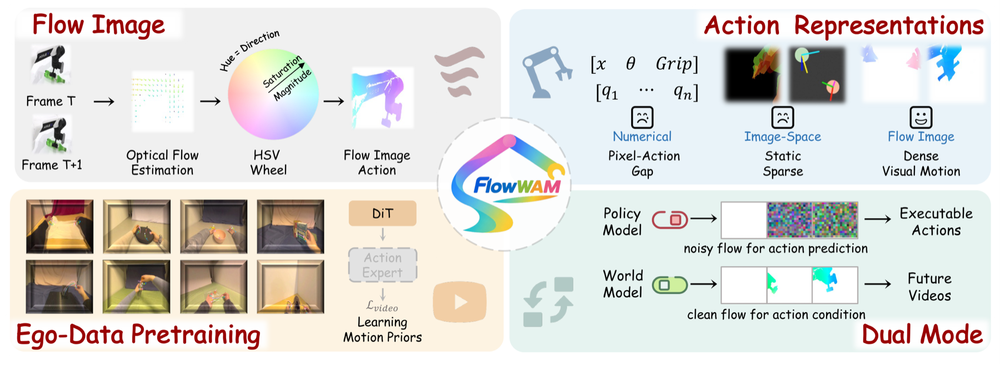
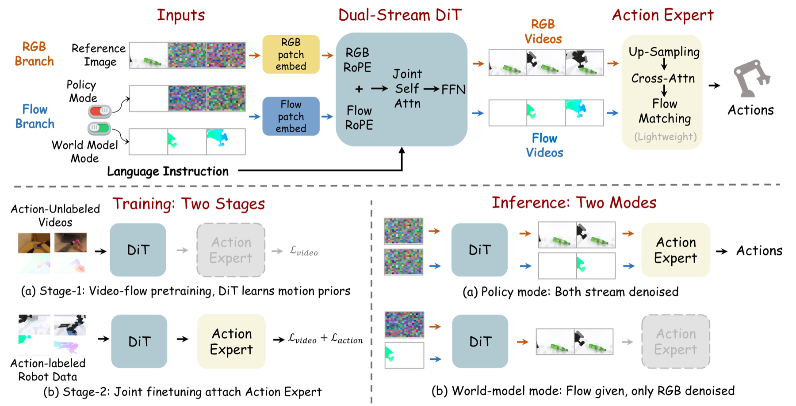

Optical Flow as a Unified Action Representation for World Action Models
World Action Models repurpose pretrained video generators for control, yet a modality gap persists: action signals must conform to the generator's visual priors while preserving the dense cross-frame motion that control requires. FlowWAM closes this gap with optical flow, a unified, video-native action representation that shares the RGB format, encodes spatially grounded per-pixel displacement, and is extractable from action-unlabeled video. A single shared dual-stream diffusion model generates flow for action prediction, conditions on flow for world modeling, and pretrains on large-scale unlabeled video.
FlowWAM bridges executable robot actions and pixel-space video priors via dense flow videos — enabling action-unlabeled pretraining, policy inference, and action-conditioned world modeling within the same framework.

HSV color-wheel encoding maps per-pixel displacement into RGB images, closing the modality gap between control signals and pretrained video priors.
A per-pixel motion field tightly steers video generation to follow the requested trajectory — far beyond sparse action tokens or static masks.
Flow is extractable directly from raw egocentric videos, so FlowWAM scales by absorbing motion priors from large unlabeled corpora.

Convert per-pixel optical flow into an RGB image via invertible HSV color-wheel encoding. Format-identical to scene frames — no separate action tokenizer needed.
RGB and flow latents share a frozen VAE encoder and all transformer blocks. Stream-specific only at patch embedding & output head. Joint self-attention over concatenated tokens.
A transformer that cross-attends to flow & RGB tokens, conditions on proprioception, and predicts N-step action chunks under flow-matching — with stochastic latent conditioning to bridge train/inference.
Both modes share the same dual-stream DiT. They differ only in whether the flow stream is unknown or observed.
Both streams initialized from Gaussian noise and jointly denoised. The model synthesizes a future RGB rollout and its corresponding flow video — then the action expert decodes executable actions from the predicted motion plan.
Flow latents are set to the clean VAE encoding of a desired motion trajectory and held fixed. Only RGB is denoised. The model renders a future video that follows the specified motion — perfect for planning and policy evaluation.
Average success rate over 50 bimanual tasks — Clean setting (fixed layout/lighting) and Random setting (randomized object pose, distractors, lighting, background).
| Method | Type | Clean | Random |
|---|---|---|---|
| π0.5 | VLA | 42.98% | 43.84% |
| X-VLA | VLA | 72.88% | 72.84% |
| Motus | WAM | 88.66% | 87.02% |
| GigaWorld-Policy | WAM | 86.36% | 85.04% |
| FlowWAM (w/o pretrain) | WAM | 82.40% | 80.80% |
| ★ FlowWAM (w/ pretrain) | WAM | 90.24% | 89.38% |
@misc{chen2026flowwam,
title = {FlowWAM: Optical Flow as a Unified Action Representation for World Action Models},
author = {Yixiang Chen and Peiyan Li and Yuan Xu and Qisen Ma and Jiabing Yang and Kai Wang and Jianhua Yang and Dong An and He Guan and Gaoteng Liu and Jianlou Si and Jun Huang and Jing Liu and Nianfeng Liu and Yan Huang and Liang Wang},
year = {2026},
eprint = {arXiv:XXXX.XXXXX},
archivePrefix = {arXiv},
primaryClass = {cs.RO},
url = {https://arxiv.org/abs/XXXX.XXXXX}
}